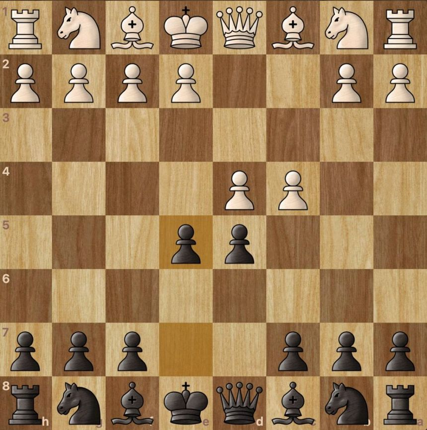
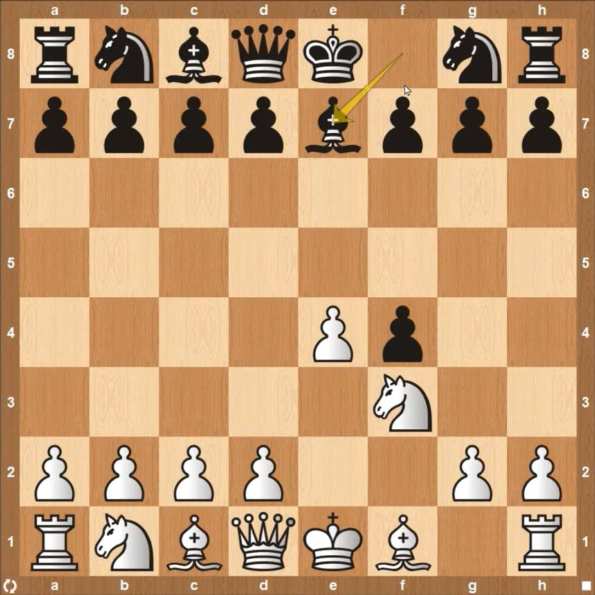
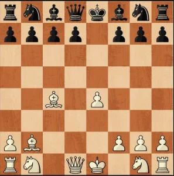

Today we're gonna talk about chess openings from aggressive to chill but strong openings to chaos. This Openings can be used from low elo to high elo. But keep in mind good openings are only in early but can be hard to maintain a good position in mid game.
  For Beginners I recommend this video of Gotham Chess. In this video explained the basics of chess and some good openings in chess for beginners for Black And White.
For Experienced chess players here are some good openings in chess to counter other openings.
In my opinion the best defense for black even though it's not aggressive it's still hard to break the formation.
Internet says it's the best opening for black for it's unbreakable defense but encountering an alien gambit from white can cause your formation to break.
Opening that sacrifices pawns in Queen side for the sake of development of pieces like bishop and knight.
An aggressive opening with just two Pieces the bishop and knight.
An Opening Where your King Go in the front line and be aggressive. Not recommended on high Elo.